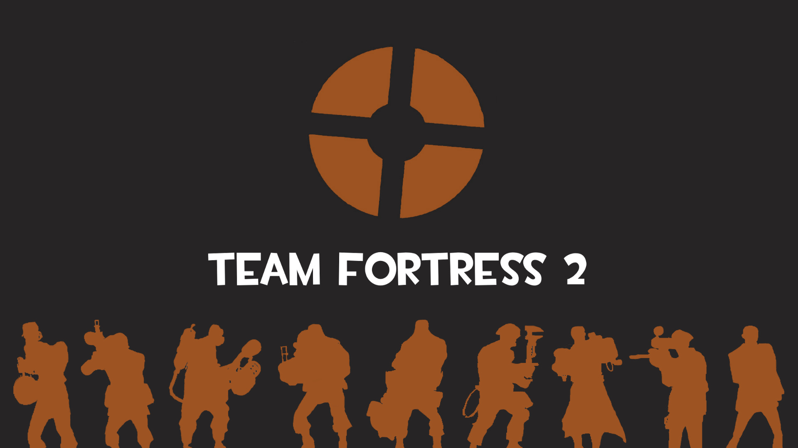

Welcome!
Team Fortress 2, also known as TF2, is a first-person team-based shooter game. First released to the public in October 2007. The game is based around a game play loop predominantly based on variations of capture the flag or king of the hill game modes. But that alone is not what has allowed this game to stick around for going on almost 2 decades. What has allowed it to stick around and maintain a sizable player base is the fact that this janky pile of spaghetti code is a game held together by a passionate community of players alongside its phenomenal gameplay loop. With ease of aces and a massive skill ceiling, supported by a recognizable art style and iconic characters that are the origin as well as basis of an entire section of meme culture. Below are three videos discussing the greatness that is TF2 far better than I can do by myself.
